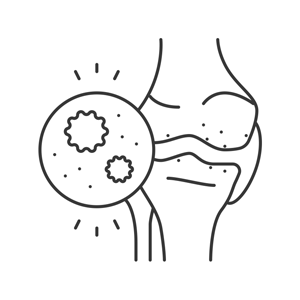

연골주사
연골주사는 주사기를 사용하여 관절 내부에 약물을 직접 주입하여
손상된 관절의 움직임을 개선하고 연골의 염증을 치료하는데 사용하는 비수술적인 치료법입니다.
검사항목
관절염, 연골손상, 연골탈구, 연골염 등
- 
시술 후 주의사항
- 주사 치료 후 최소 2~30분 동안에는 안정을 취하도록 합니다.
-
주사 치료 후 관절 부위에 부종이나 통증이 있을 수 있습니다.
통증이 있으신 경우 얼음 찜질팩을 얇은 타올에 감싸 15-20분 동안 찜질하는 것이 좋습니다. -
주사 치료 후 감염의 우려가 있으므로 24시간 동안에는
사우나, 찜질 등을 피하고, 시술한 부위에 물이 닿지 않도록 하는 것이 좋습니다.